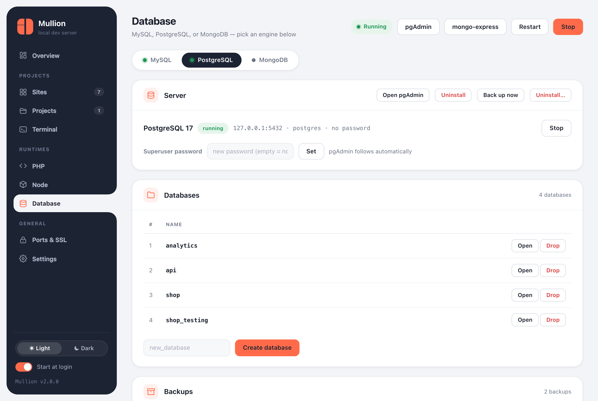

Databases
MySQL/MariaDB, PostgreSQL and MongoDB side by side. Each has its own admin tool, and backups are offered before anything destructive.

Engines
The Database page has a tab for each engine. Each one installs, starts and stops independently, and an engine you stop stays stopped until you start it. The stack and autostart won't bring it back.
| Engine | Default | Admin tool | CLI |
|---|---|---|---|
| MySQL / MariaDB | 8.4 LTS on 127.0.0.1:3306, user root, no password | phpMyAdmin at https://phpmyadmin.test (HeidiSQL also available on Windows) | mullion mysql, db, mariadb |
| PostgreSQL | 17 on 127.0.0.1:5432, user postgres | pgAdmin 4, with a "Mullion (PostgreSQL)" server already registered | mullion postgres (pg), pgadmin |
| MongoDB | 8.0 on 127.0.0.1:27017 | mongo-express at https://mongo.test | mullion mongo, mongo-express |
Installed admin tools appear as buttons in the panel's top bar and can be uninstalled from their engine's tab. Uninstalling an admin tool leaves the database server alone.
MySQL and MariaDB
$ mullion mysql install # newest 8.4 LTS
$ mullion mysql install 8.0 # a branch, "latest", or a full version
$ mullion mariadb # switch to MariaDB (newest stable)
$ mullion mysql password secret # phpMyAdmin follows automatically
$ mullion db create shop # utf8mb4
$ mullion db list
$ mullion mysql restore ~/Mullion-Backups/2026-09-23_092011-mysqlWhen you switch versions, your databases migrate automatically: Mullion dumps them from the old server, starts the new one with a fresh data folder, and restores the dump. The old data folder and the dump are kept as backups. If it replaces another MySQL (Laragon, XAMPP, a Homebrew service), it always offers a backup first and imports it.
PostgreSQL
$ mullion postgres install # newest 17; "16", "latest" or "16.4" also work
$ mullion pg db create analytics
$ mullion pg password secret
$ mullion pgadmin # installs (first time) and opens pgAdmin 4Switching to a different major version stops the previous server. Data folders are per major version, so the old data stays on disk untouched, and Mullion prints where it is.
MongoDB
$ mullion mongo install # newest 8.0; "7.0", "latest" or a full version
$ mullion mongo db create events
$ mullion mongo-express # admin UI at https://mongo.testBackups
- Back up now on an engine's tab writes a timestamped folder, such as
2026-09-24_181502-postgres. You can also runmullion mysql backup,mullion postgres backup, ormullion mongo backup. - Each engine's Backups card lists its backups with their size and contents, and has Restore and Delete buttons.
mullion backupslists every backup from the CLI.- Backups go to a folder next to the install folder by default:
~/.mullion-BackupsorC:\Mullion-Backups. That way they survive an uninstall. Change the folder in Settings.
$ mullion postgres restore <backup-folder> # every database, plus roles (best effort)
$ mullion postgres restore <backup-folder> shop # just one database
$ mullion mongo restore <backup-folder-or-.archive.gz>
$ mullion mysql restore <file.sql-or-folder>Backups are also taken automatically when you switch MySQL versions and, if you choose, before uninstalling an engine.
Uninstalling an engine
An engine's Uninstall… button, or mullion <engine> uninstall, stops the server, backs it up, and removes the binaries, the data and its admin tool. The PostgreSQL and MongoDB commands take --keep-data, --no-backup and --yes.
Changing ports
If another program already uses a database's port, move the engine. Mullion checks the new port for conflicts and restarts the engine if it's running.
$ mullion port set postgres 5433
$ mullion port set mysql 3307 --force # even if something holds it